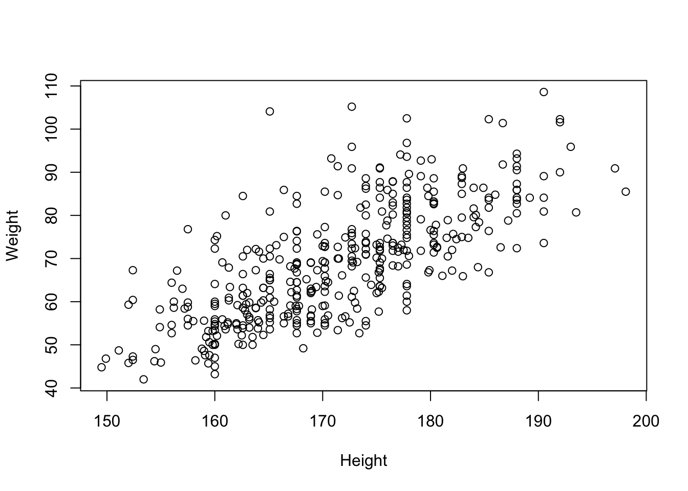

Exercise 5 - Graphics
Plot the heights versus the weights for all observations in bodydata.
plot(x = Height, y = Weight)
Spice up the plot
Check out the presentation for lesson 1 to see how to spice up the plot
Explore the ?par help file
Use the isBoth variable to create a color vector
Here, isHeady & isTall returns a logical vector. The ifelse function returns blue if TRUEand red if FALSE for each elements of the logical vector. The colors are then used in the plot so that all the Heavy and Tall person will be colored “blue” and rest as “red”.
Use “mycolors” in the col argument of the plot function to mark the tall and heavy individuals
Plot all variables against each other
pairs(bodydata, col = mycolors)